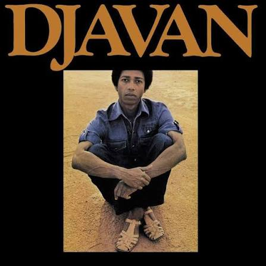
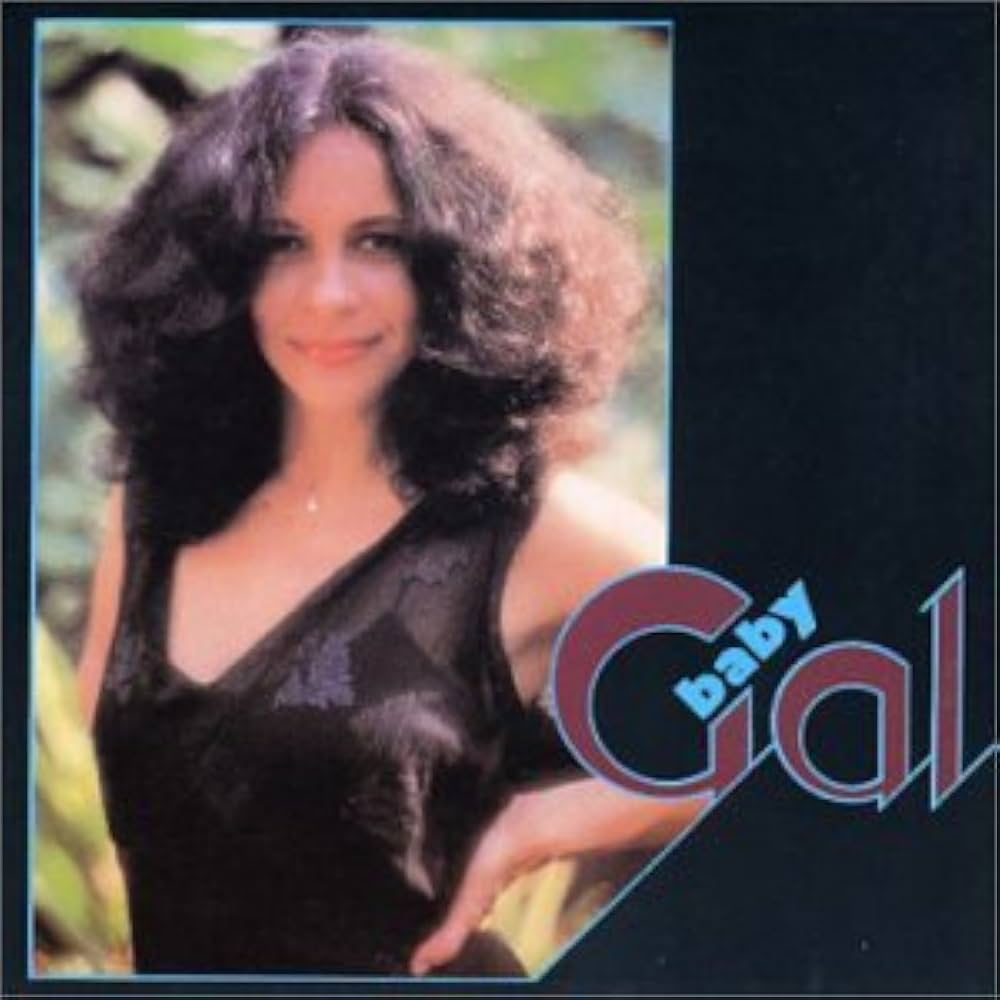
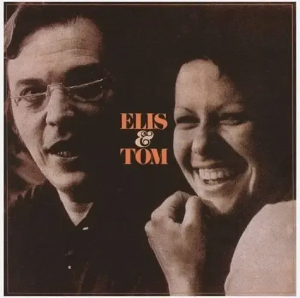

Sobre a loja
Fundada em 2026, nossa loja nasceu com um propósito: valorizar o vinil e manter viva a paixão pela música.
Acreditamos que ouvir música em um disco de vinil é muito mais do que apertar o play. É uma experiência que envolve o som, a capa do álbum, o cuidado com o disco e toda a história por trás de cada artista e cada música.
Nosso principal destaque é a Música Popular Brasileira (MPB). Reunimos discos de diferentes épocas e estilos para celebrar grandes artistas brasileiros e também apresentar novos sons para quem deseja conhecer melhor a riqueza da nossa música.
Aqui, cada disco tem uma história. Nosso objetivo é aproximar as pessoas da música brasileira e mostrar que, mesmo em uma época cada vez mais digital, o vinil continua tendo seu espaço.
Valorize a música. Valorize o vinil. Valorize a cultura brasileira.

Gal Costa - Baby Gal (1983)
Marisa Monte - Infinito Particular (2000)
Jorge Vercilo - Encontro das Águas (1994)
Jorge Ben Jor - Samba Esquema Novo (1963)
